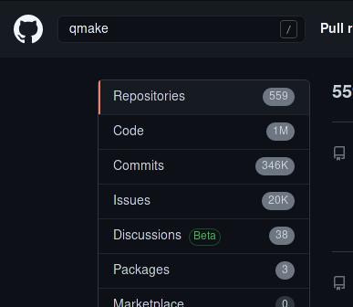
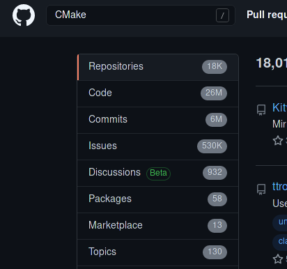

1. Qt6
时光荏苒，Qt6 发布 已经是去年的事情，截止到写文章的时候 Qt 6.1 都已经发布很久
Qt5 和 6 之间一个重大的改变就是 Build System 从 qmake 转向了 CMake （太好了！），而后者有更多的 C/C++ 项目支持。  
（这数量级之差不用我多说啥了吧）
Qt 6.0 主要的目标是 “能用就行”，因此他们只在 release 里面包含了
qtbase，qtdeclarative，qt5compat，qtshadertools，qtwayland和qtquick3d这些相对基础的组件。
Qt 6.1 在此基础上又增加了
qtcharts，qtdatavis3d，qtimageformats，qtnetworkauth，qtvirtualkeyboard和qtlottie
相比之下 6.1 包含的组件已经很多了
2. WASM
我心心念念的 Qt for WASM 还是没来。
后来看到 QTBUG-87471 才知道还得等到 Qt 6.2，这让我萌生了从源码编译的冲动
3. “能编译了吗？”
因为要编译的是 dev 分支的 Qt6，我决定用 git 拉源码，还能随时 git pull 到最新的版本，于是开始 clone
试了一圈发现 GitHub 的 mirror 比较快 (虽然 repo 叫 qt5 但他其实里面是 qt 的 dev 分支，简直太迷惑了)
|
|
「哦淦，dev 分支没有文档啊」
…… （冷场）
4. 藏在角落的编译文档
经过了 114514 小时的高强度搜索，终于在 QTBUG-78647 评论区找到了一点点编译参数的 Hints
于是立即开始 build, 看了看两个 notes 都跟我没关系嘛
- “NOTE You need an ultra recent version of cmake”
- Arch 用户从来不担心版本太旧
- “NOTE You will need to host build of Qt 6.0.x, easiest to download the binary release for your desktop platform. Building from git also works.”
- 喵？ 那我
pacman -S qt6不就好了
- 喵？ 那我
5. 开搞！
拿来评论区的编译参数，稍微改了改，就变成了
|
|
Qt 的 CMake Configure 过程异常地耗时，于是漫长的等待开始了
⬅️ To Be Continued